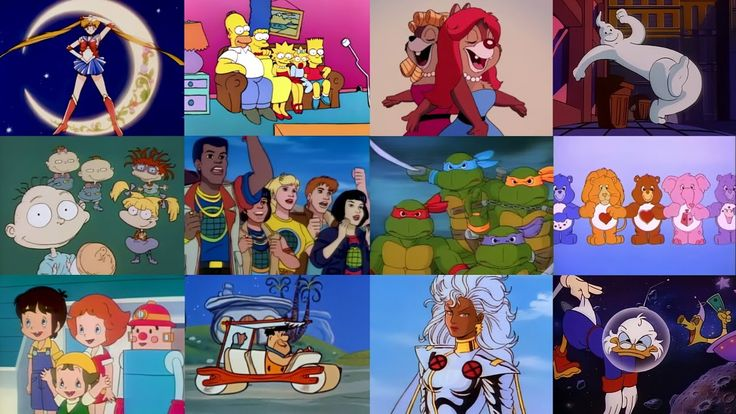

A década de 2000, que vai do ano 2000 até 2009, foi marcada por grandes transformações no mundo todo. Foi um período de avanços tecnológicos, mudanças políticas, crises econômicas e acontecimentos que deixaram marcas profundas na história da humanidade.
Logo no início da década, o mundo foi abalado pelos atentados de 11 de setembro de 2001, quando aviões sequestrados por terroristas da Al-Qaeda atingiram as Torres Gêmeas em Nova York e o Pentágono, nos Estados Unidos. Esse evento mudou a política internacional e deu início à chamada “Guerra ao Terror”, com os EUA invadindo o Afeganistão em 2001 e o Iraque em 2003.
Na área da tecnologia, os anos 2000 marcaram o início da era digital. A internet começou a se popularizar de forma massiva, surgiram as redes sociais como o Orkut (2004), Facebook (2004) e o YouTube (2005), e os primeiros smartphones começaram a aparecer, mudando a forma como as pessoas se comunicavam. A Apple lançou o primeiro iPhone em 2007, o que revolucionou o mercado de telefonia móvel.
No Brasil, a década de 2000 foi marcada por importantes mudanças políticas e sociais. Em 2002, Luiz Inácio Lula da Silva foi eleito presidente, tornando-se o primeiro operário a ocupar o cargo. Seu governo teve foco em programas sociais como o Bolsa Família, que ajudaram a reduzir a pobreza no país.
A música e a cultura pop também tiveram forte influência nessa década. Bandas como Linkin Park, Coldplay, artistas como Beyoncé, Britney Spears, Eminem, e ritmos como o hip hop, o pop punk e o funk carioca marcaram a juventude da época. No cinema, sagas como Harry Potter, O Senhor dos Anéis e Piratas do Caribe conquistaram o público mundial.
Infelizmente, os anos 2000 também enfrentaram desastres naturais devastadores, como o tsunami na Ásia em 2004, que matou mais de 230 mil pessoas, e o furacão Katrina nos Estados Unidos em 2005, que destruiu a cidade de Nova Orleans.
Além disso, a década terminou com a crise financeira mundial de 2008, causada principalmente pela quebra de grandes bancos nos Estados Unidos. Essa crise afetou diversos países e gerou um período de recessão econômica.